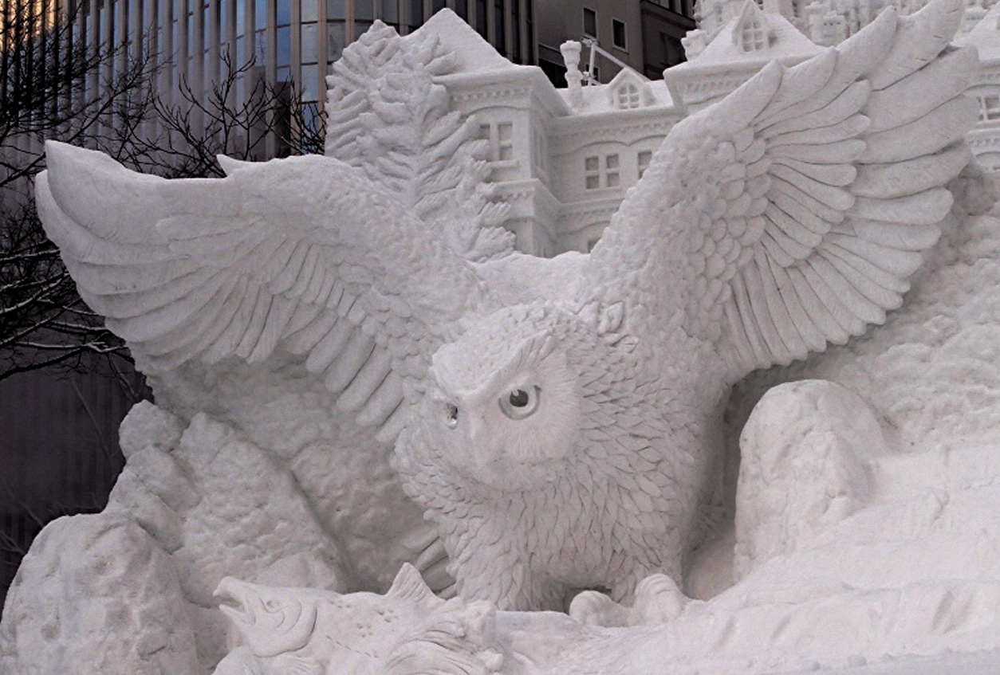
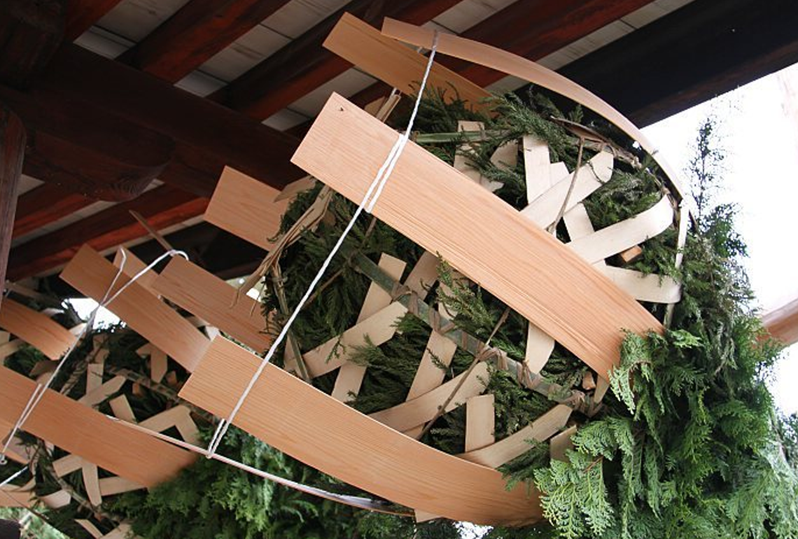
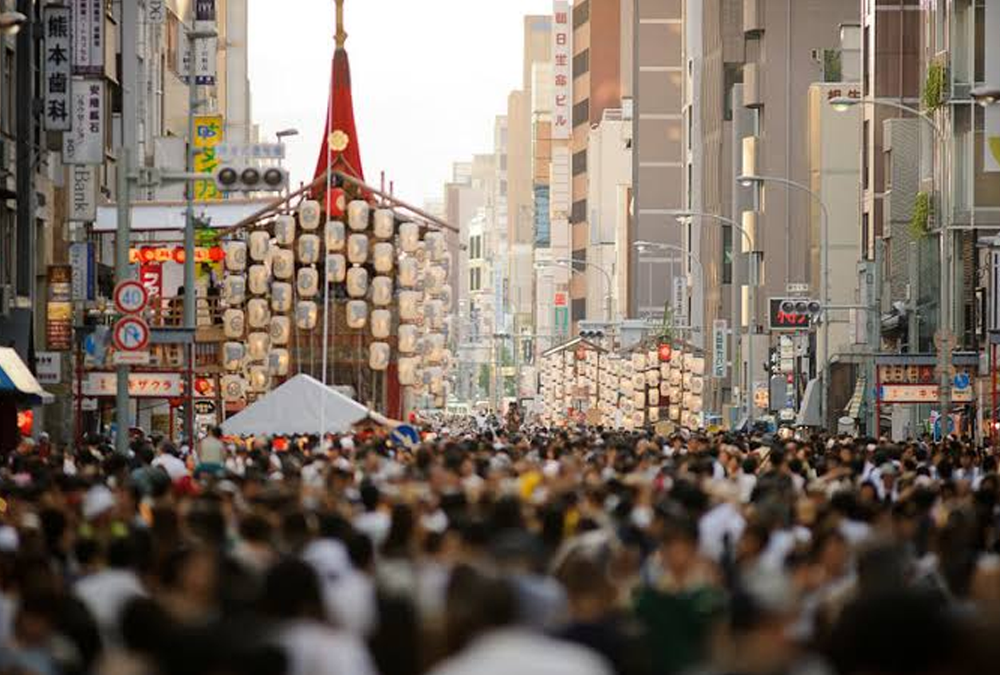
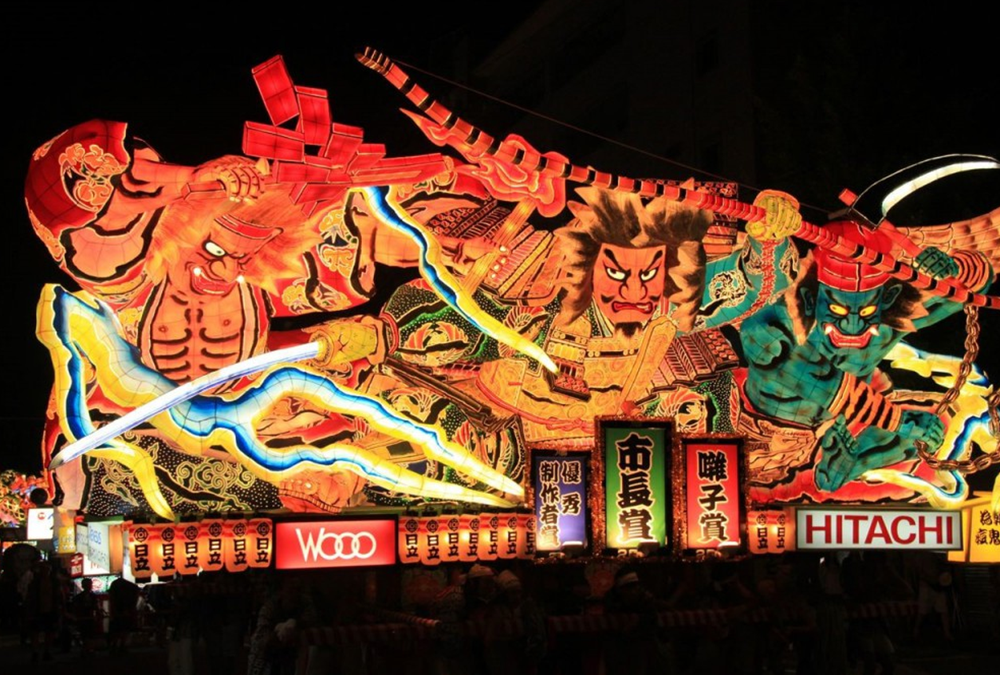
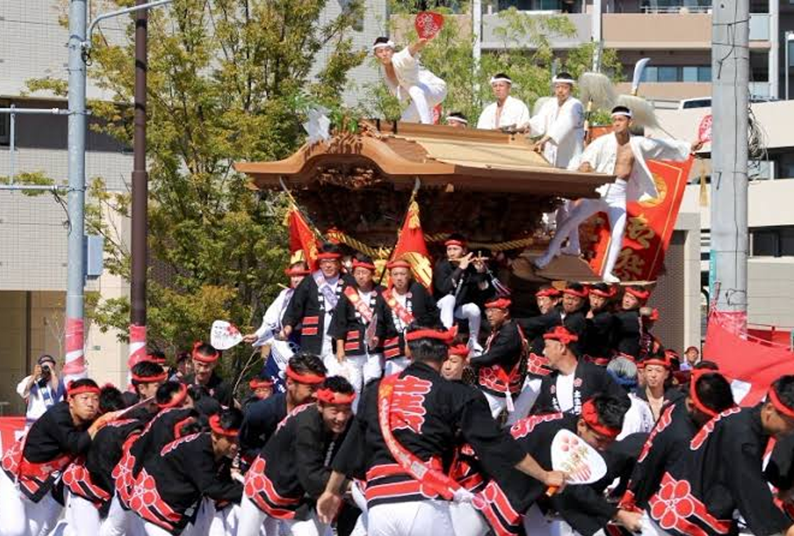

|  |
เทศกาลหิมะซัปโปโระ (さっぽろ雪まつり )(Sapporo Yuki-matsuri) เป็นเทศกาลหิมะที่ Read more |
|  |
โอมิซุโทริ (お水取り) เป็นเหตุการณ์ทางพุทธศาสนาที่จัดขึ้นทุกปีในเดือนมีนาคมที่วัด Todaiji Read more |
|  |
เทศกาลกิอง (祇園祭) ในเดือนกรกฎาคมของทุกปี ที่เกียวโตจะมีการจัดเทศกาลกิอง Read more |
|  |
เทศกาลอะโอโมริเนบุตะ (青森ねぶた祭り) เนบุตะ (Nebuta) และเนปุตะ (Neputa) เป็นเทศกาลฤดูร้อนที่เกี่ยวข้องกับเทศกาลทานาบาตะ (Tanabata) จัดขึ้นในเมืองต่างๆ Read more |
|  |
เทศกาลคิชิวะดะ ดันจิริ (補正済み) เทศกาล Kishiwada Danjiri (การดึงรถลากไม้ในทรงศาลเจ้าหรือวัดขนาดมหึมาตามท้องถนน) เป็นเทศกาลที่เป็นที่รู้จักกันทั่วประเทศ และมีประวัติศาสตร์มากว่า 300 ปีเริ่มตั้งแต่สมัยยุคกลางเอโดะ ไฮไลท์ของเทศกาลคิชิวะดะ ดันจิริ Read more |